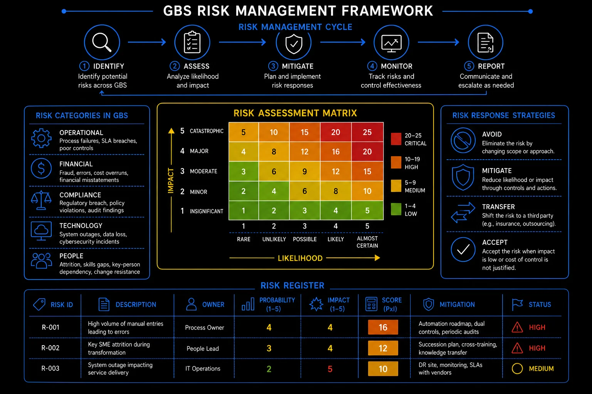

Pillar 9 · Cluster 1
Risk management for GBS operations
Business continuity, vendor risk, and incident management are not theoretical frameworks — they are the operational shields that determine whether your GBS center survives disruptions or collapses under them.

Risk management framework — identification through reporting
Sound familiar?
Topic 01 · Business Continuity
Business Continuity Planning in GBS
Business continuity plans are tested by reality without warning. A BCP that exists only as a document is a wish with a title page. Read how to solve this in the section below!
The plan looked complete.
Then the building closed.
 P
PA burst pipe closes Peter’s floor on a Tuesday. The BCP exists — nobody has ever run it.
Laptops at desks. Call trees outdated. One critical task needs a token locked in a drawer upstairs.
Recovery takes two days. The plan promised four hours.
"We had a document. We did not have a capability."
He feels humbled by a pipe.
You equate having a plan with having tested one. Reality only grades the second.
A living BCP has three moving parts.
The next drill takes ninety minutes and finds four gaps. Cheap lessons — bought before the next pipe.
Business continuity in depth
When your GBS center goes offline — power failure, pandemic, natural disaster, cyberattack — what happens to the 50,000 invoices, payroll runs, and customer orders that depend on it?
A BCP that has never been tested is not a plan. It is a document. Business Continuity Planning (BCP) is the discipline of ensuring critical business processes can continue during and after a disruption. For GBS operations, this means:
- Identifying which processes are critical
- Defining acceptable downtime
- Establishing backup capabilities
- Testing the plan regularly
- Business Impact Analysis (BIA) — classify every process by criticality and maximum tolerable downtime (MTD)
- Recovery Time Objective (RTO) — how quickly must the process be restored after disruption
- Recovery Point Objective (RPO) — how much data loss is acceptable (e.g., last backup was 4 hours ago)
- Alternate site strategy — secondary location, remote work capability, or partner site that can absorb critical workload
- Communication plan — who gets notified, in what order, through which channels when a disruption occurs
- Testing cadence — tabletop exercises quarterly, full simulation annually, lessons learned documented and actioned
Most GBS organizations have a BCP document. Far fewer have tested it under realistic conditions.
- A plan that says "employees will work from home" fails when VPN capacity is 500 users and you have 3,000 employees.
- A plan that says "work transfers to the secondary site" fails when the secondary site has never processed a live transaction.
Test the plan, find the gaps, fix them before the disruption arrives.
Risk categories — operational, financial, compliance, technology, people
Pick your most critical task. Could you run it from home, today, with current access? Verify.
Your continuity depends on vendors too. Theirs is your problem.
Topic 02 · Third-Party Risk
Vendor risk — third and fourth party exposure
Your vendor’s vendor can take you down. Third- and fourth-party risk means knowing the chain, not just the contract. Read how to solve this in the section below!
Your vendor was fine.
Their vendor was not.
 K
KKlaudia’s data provider goes dark for a day. The provider’s own cloud subcontractor failed.
Her team’s contract covered the vendor. Nobody had ever asked who the vendor depended on.
The outage arrived through a company nobody in the building could name.
"We managed the contract. The risk lived one layer deeper."
She feels blindsided by the supply chain behind the supply chain.
You assess the vendor you signed and ignore the chain they stand on.
Vendor risk is a chain, mapped three links deep.
Her vendor review adds one question: "Who do you depend on?" The next outage surprises the contract — not the team.
Third- and fourth-party risk in depth
Your GBS operation depends on vendors who depend on their own vendors. A failure three layers deep in the supply chain can still shut down your operations.
- Vendor tiering — classify vendors by criticality: Tier 1 (business-critical, no alternative), Tier 2 (important, alternatives exist), Tier 3 (commodity, easily replaceable)
- Due diligence — financial stability, security certifications (ISO 27001, SOC 2), regulatory compliance, geographic risk, and concentration risk
- Contractual protections — SLAs with penalties, audit rights, data protection clauses, termination provisions, and transition assistance obligations
- Ongoing monitoring — quarterly business reviews, annual re-assessment, continuous monitoring of financial health and security posture
- Fourth-party visibility — understand your vendor's critical subcontractors; their failure is your failure
- Single vendor dependency — if one vendor handles 80% of your transaction processing, their outage is your outage
- Geographic concentration — multiple vendors in the same city or country share the same natural disaster and geopolitical risks
- Technology concentration — all vendors on the same cloud platform means a cloud outage affects everyone simultaneously
- Mitigation — multi-vendor strategies, geographic diversification, contractual exit provisions, and maintained in-house capability for critical processes
Risk assessment matrix — impact vs likelihood
For your most critical vendor, ask: "Who do you depend on to serve us?" Log the answer.
When any link snaps, the clock starts. Incidents reward the prepared.
Topic 03 · Crisis Response
Incident management and crisis escalation
Incidents are graded on response, not absence. Classify, communicate, restore, review — in that order, every time. Read how to solve this in the section below!
The outage was one hour old.
The chaos made it three.
 A
AA feed failure hits Amara’s queue. Five people investigate the same thing separately.
Three stakeholders get three different stories. Nobody owns the incident; everybody touches it.
The fix takes twenty minutes — once someone finally coordinates. Finding that someone took two hours.
"The incident was small. Our response made it big."
She feels scattered — along with everyone else.
You respond to an incident with energy and urgency but no structure — no clear roles, no communication plan, no decision authority. The chaotic response causes more damage than the original problem.
Incident discipline is four steps in strict order.
The next feed failure gets an owner in five minutes and one status line hourly. Twenty-minute problems start taking twenty minutes.
Incident management in depth
When something goes wrong at scale — a data breach, a system outage, a regulatory violation — the quality of your escalation playbook determines whether it stays an incident or becomes a crisis.
Detect and classify
Identify the incident, assess severity (P1 critical, P2 major, P3 moderate, P4 minor), and determine the affected scope — processes, users, customers, and regulatory implications.
Contain immediately
Stop the bleeding. Isolate affected systems, activate workarounds, and prevent the incident from expanding. Speed matters more than perfection at this stage.
Escalate per playbook
Notify the right people at the right level based on severity classification. P1 incidents should reach senior leadership within 30 minutes, not 30 hours.
Resolve and restore
Fix the root cause, restore normal operations, and verify that the fix works. Document every action taken with timestamps.
Review and learn
Post-incident review within 5 business days. Root cause analysis, timeline reconstruction, what worked, what failed, and specific actions to prevent recurrence.
- The biggest incident management failure is delayed escalation. People wait hoping the problem will resolve itself. It rarely does, and the delay makes the impact worse.
- Post-incident reviews that blame individuals instead of identifying systemic failures guarantee that the next incident will be hidden, not escalated.
Risk register — ID, description, owner, probability, impact, mitigation
Write your team’s one-line incident rule: who owns, who speaks, how often.
Operational risk handled. Cluster 2: the rules with regulators behind them.
Reference
Glossary
Full glossary at the GBS Insider Club Field Guide.
- ISO 22301 — Business Continuity Management Systems standard
- BCI — Business Continuity Institute Horizon Scan Report, 2025
- Gartner — Third-Party Risk Management framework, 2025
- NIST — Computer Security Incident Handling Guide, SP 800-61
Knowing the frameworks is the entry ticket. Applying them — visibly, at your actual job — is what gets you promoted.
The GBS Insider Club Career Playbooks turn this theory into a guided 90-day program for your role: self-assessment, practical exercises, templates, and Julian's unfiltered practitioner playbook.
Explore the Career Playbooks → Back to Compliance and Risk